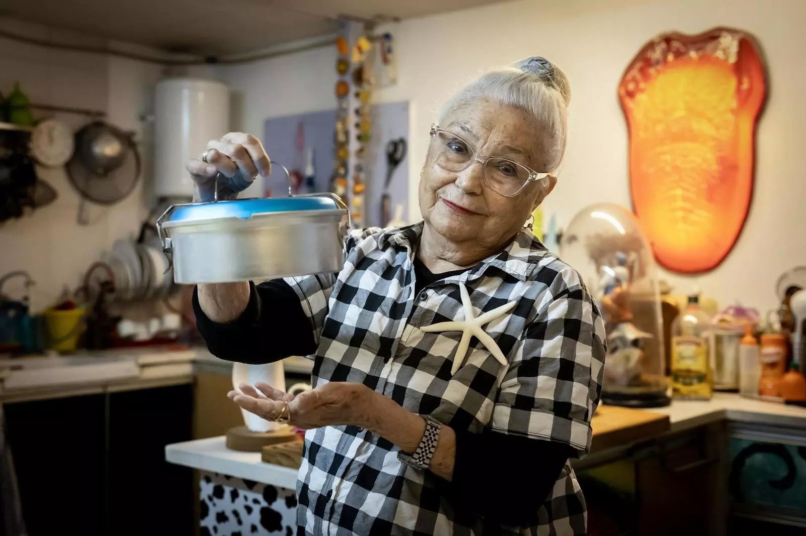
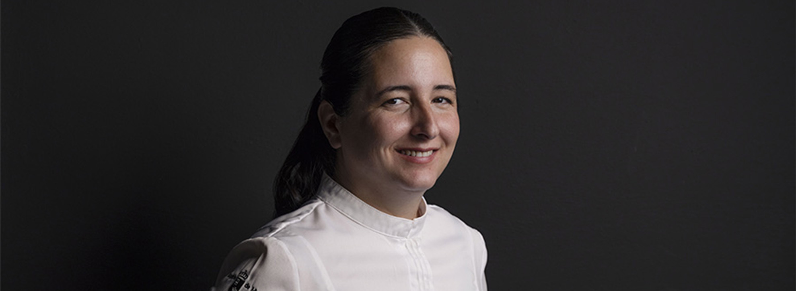
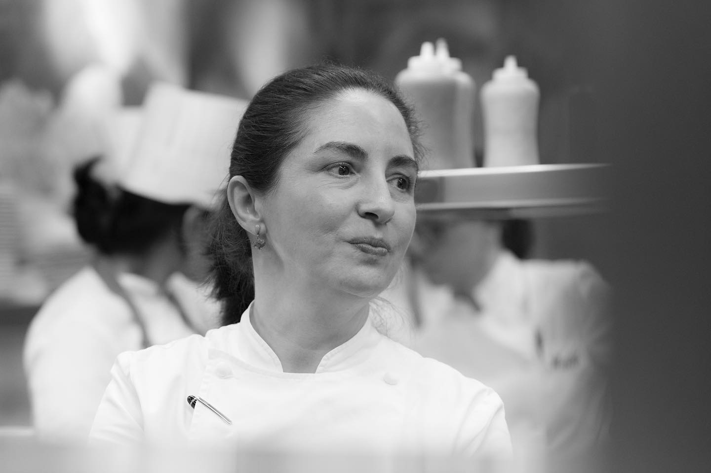
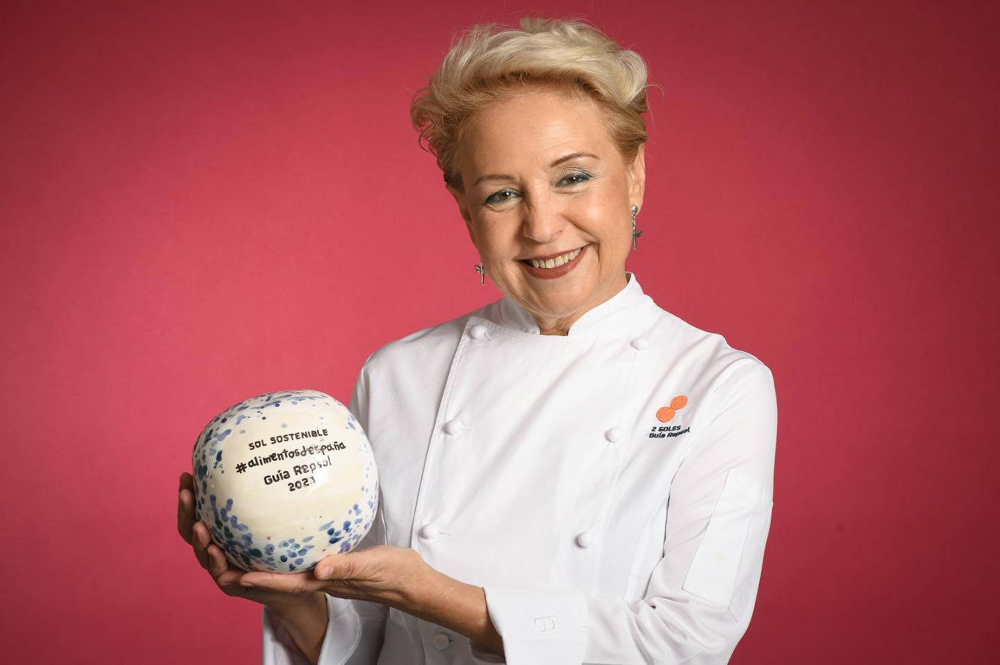
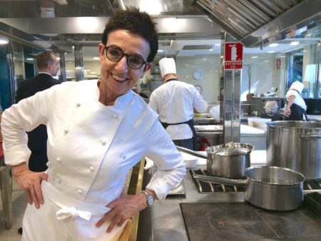
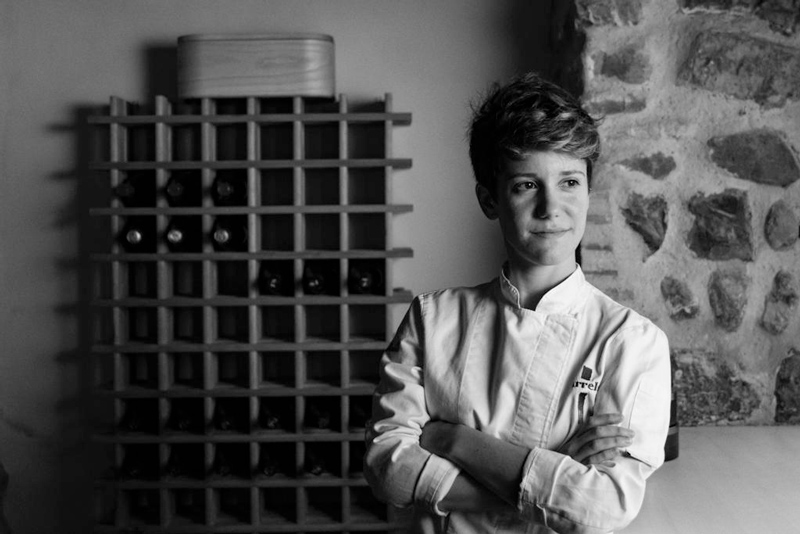

Montse Guillén
Cataluña - MG Barcelona (1980) & El Internacional NY...

Cataluña - MG Barcelona (1980) & El Internacional NY...

Región de Murcia - Estrella Michelin Magoga, equilibrio entre huerta de Cartagena y mar Mediterráneo.

País Vasco - Co-chef de Restaurante Arzak (3 estrellas Michelin), revolucionando la cocina vasca con tradición e innovación.

Valenciana - Autodidacta de La Finca (Elche, 1 estrella Michelin), cocina mediterránea intuitiva y respetuosa con la huerta.

Cataluña - Máxima estrella Michelin femenina mundial (5★), sigue en Moments con su hijo tras Sant Pau (3★).

Valenciana - Arrels (Sagunto, 1 estrella Michelin a los 29 años), cocina personal mediterránea abierta con solo 25 años.